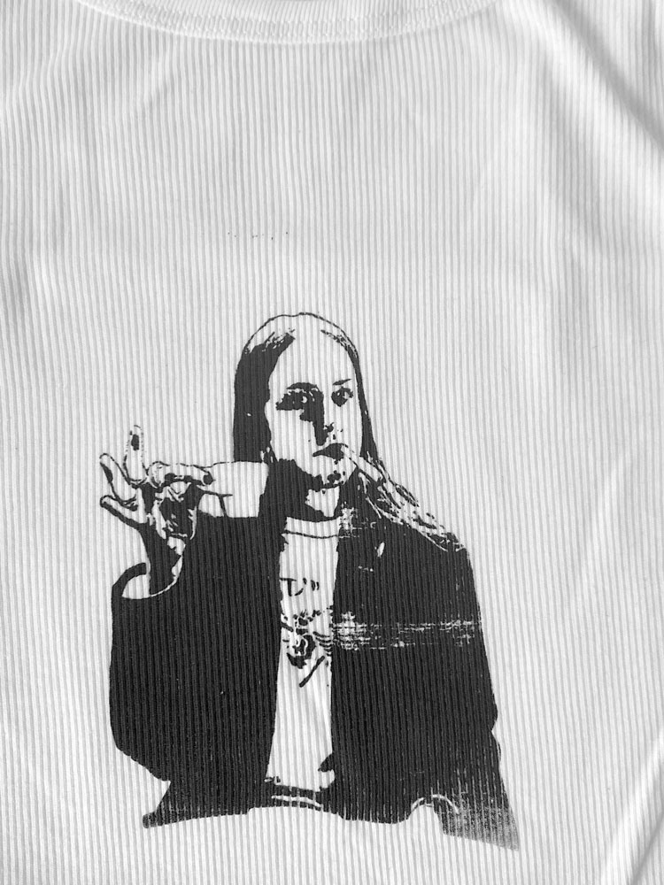
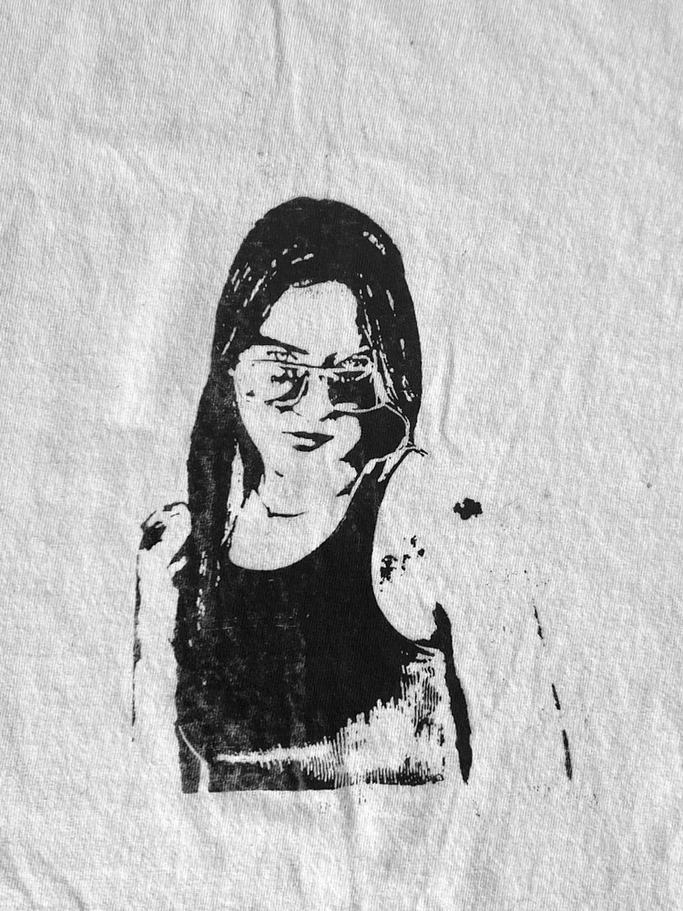
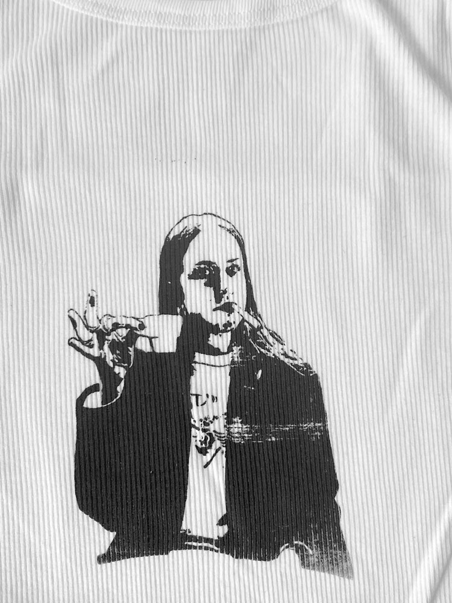
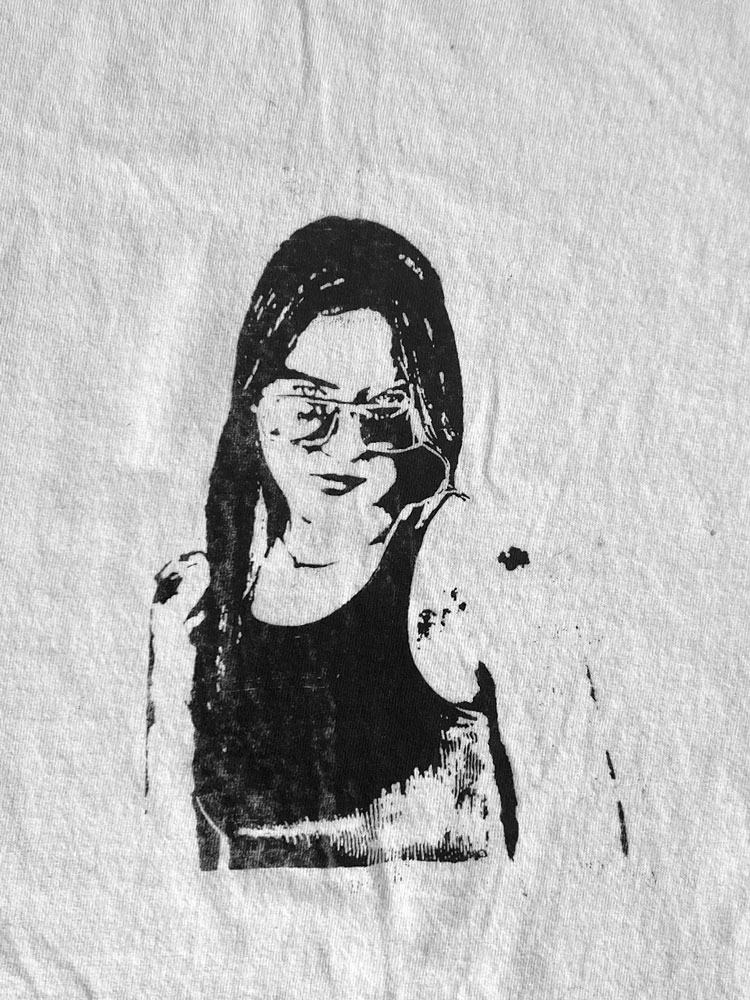

print & process
Printmaking sharpened my understanding of layering, registration, color systems, and controlled experimentation. The discipline of analog process continues to inform how I structure digital design systems.
CMYK screenprint study
A multi-layered screenprint built using four individual screens — cyan, magenta, yellow, and key black. Each print required precise alignment and sequential layering to produce a full-color image. The process emphasized structure, patience, and systematic iteration.


cyanotype
Experimental compositions created through light exposure and shadow mapping. These studies explore contrast, negative space, and material unpredictability.


relief & textile printing
Linocut and silkscreen experiments translating graphic forms across paper and textile surfaces. These works examine repeat structures, material adaptation, and tactile pattern systems.
 


